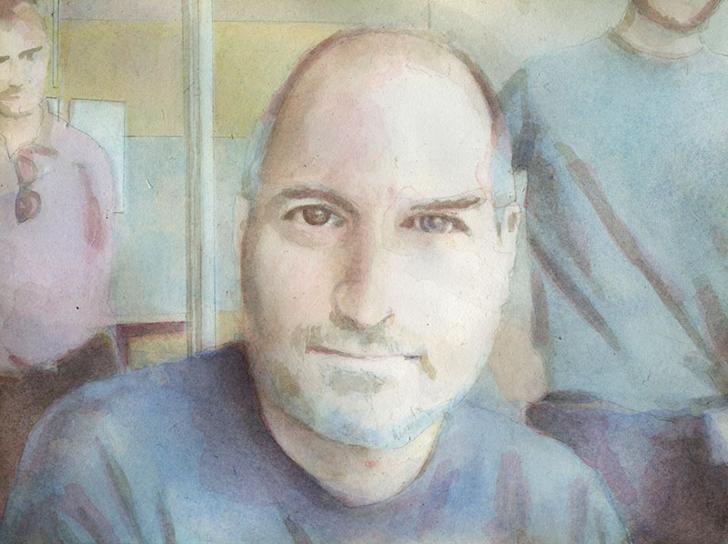
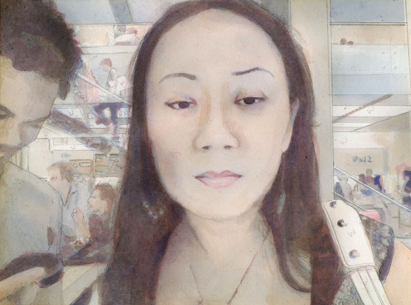
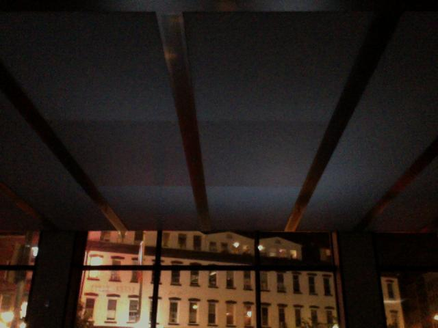
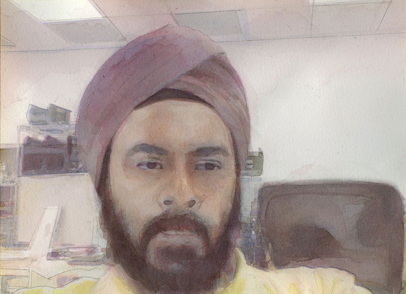
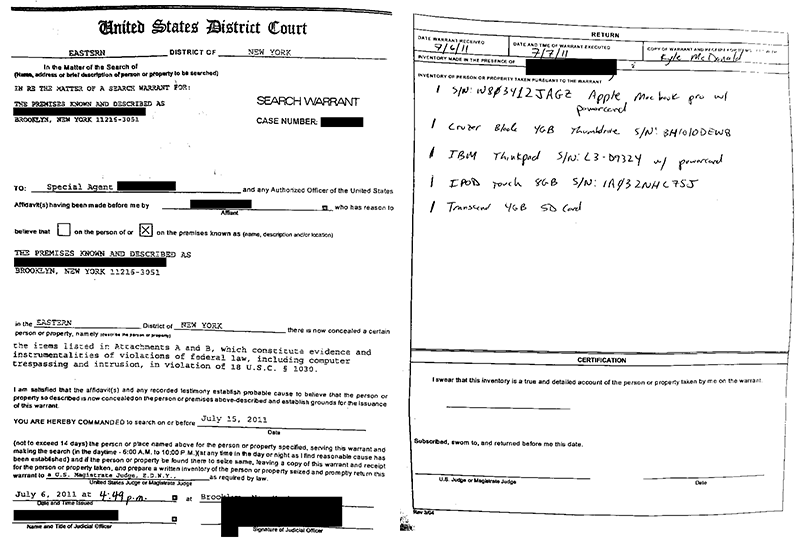
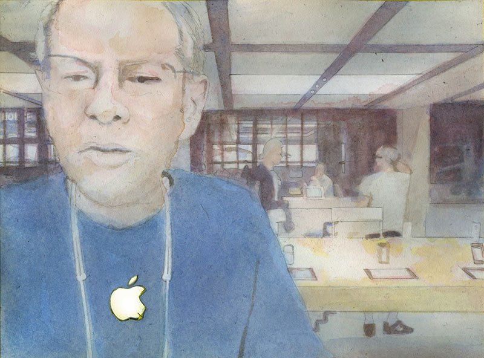
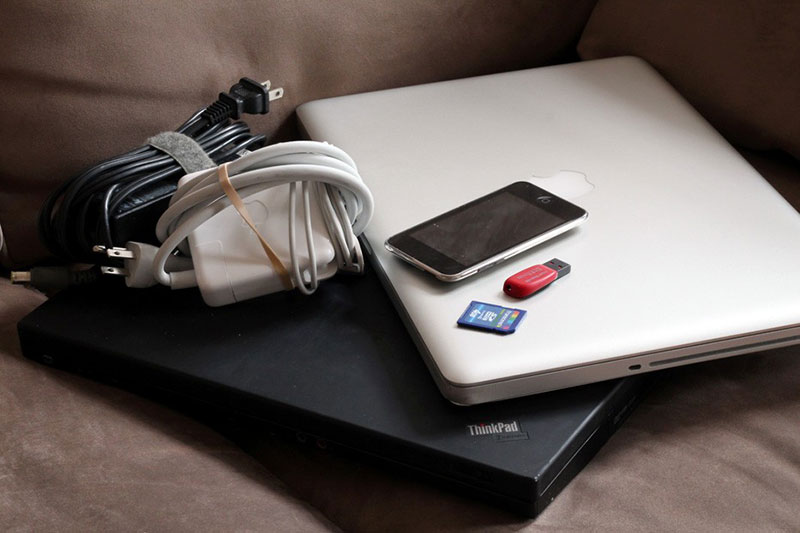

In 2011 I published a series of photos taken with the laptops in two New York City Apple Stores, as part of my ongoing exploration of surveillance, face analysis, and computer-mediated interaction. In response, Apple contacted the Secret Service and they raided my apartment. After censoring the work online, Apple did not pursue a civil case against me. And after a few months long investigation by the Secret Service, Assistant United States Attorney Judith Philips declined to prosecute me.
Ten years later, this work is still an important reference point for my art practice. I continue to work with faces and to reflect on privacy and surveillance in a new era dominated by machine learning.
In 2016 I filed a Freedom of Information Act (FOIA) request to learn more about what happened behind the scenes in 2011. I received a response over a year later. The full FOIA response offers an inside look: scrawled notes on the phone with Apple, descriptions of a Special Agent scrolling through my social media, justifications for a search warrant, a detailed closing report. But it is mostly boring minutiae: multiple pages of paperwork for every piece of hardware that was seized, separate lines documenting every time evidence was withdrawn and returned to the locker.
Reading this story again ten years later, I see a lot that has changed in me.
In 2011 I was still under the false belief that all varieties of law enforcement are designed to protect the public from harm. It was a sign of my privilege, and of my naive faith in the system. How many other people have pointed the Secret Service to incriminating evidence on their own laptop, and literally given them passwords in an effort to help? I thought we were all on the same side. In some ways this is a story about how I began to learn that law enforcement is there to protect some specific people (and companies), and not the general public as I imagined.
My own blindness and immaturity comes through in some other funny ways. The fact that I never once thought to pick a pseudonym and reply to all the comments, just for fun, shows how deep I was into the idea of having a unified online persona. I didn't really address this until Going Public in 2013, where I let anyone tweet using my account. At the end of that project, I nearly had a breakdown as my online identity fractured and dissolved.
It's funny to look back on some of the more superficial ideas in this story. Especially the parts where I chastise, "look, we've gotten so wrapped up in all these computers we have forgotten about the real people around us". Like one of those cafe signs that says "we don't have wifi, talk to each other, pretend it's 1995". I think this cynical, dismissive attitude towards networked technology was popular in the late 2000s and early 2010s. Now I can see I was just parroting it.
Reading today, I briefly recall what it felt like to think about surveillance before Snowden. Before 2013, we all suspected massive government spying programs, but the majority of the public who were not from historically surveilled groups had very little evidence. It's hard to imagine this project making sense today, knowing more about exactly all the ways we are always being watched.
I'm not sure I would make this piece today, anyway. I'm increasingly critical of artwork that attempts to engage with the theme of surveillance by replicating systems of surveillance. How fruitful can a conversation be about consent and privacy, when an artist does not seek their subject's consent?
Ten years later, what survives? I think my drive to create challenging and unsettling art remains. I still love to approach dystopian complexity with hopeful and idealistic simplicity. Not to revel in naivete alone, but to set up a confrontation in order to examine incongruities. Most importantly, most of my relationships have survived: many people showed support while my future was uncertain, and I'm still grateful to be part of such an amazing community.
This story was first published by Wired in 2012, When Art, Apple and the Secret Service Collide: 'People Staring at Computers'. In my original text I wrote that the Secret Service "borrowed" my equipment. Wired insisted I edit it to "seized". Here, I have left it unedited.

Maybe an email, or a phone call from Apple. Instead, my first indication that something was "wrong" was a real-life visit from the organization best known for protecting the President of the United States of America.
They rang the doorbell a few times. It woke me up, and I tried to ignore it. There were always kids playing with the doorbells in our apartment building. But the kids don't normally shout, "this is the Secret Service, open the door", so I took that as my cue to get out of bed.
I cracked the door open a few inches, and an agent was already leaning into the frame. He explained that he was from the Electronic Crimes Task Force, and that they had a search warrant. Under different circumstances it could have been quite cinematic, but it was an incredibly hot summer morning in Brooklyn. I was tired, and wearing only gym shorts. I saw the two agents behind him look me up and down, and they relaxed.
I told them I'd be glad to help however I could, and invited them in.
"Are there any drugs or weapons in the house?"
"No sir."
He was incredulous. "Are you sure?"
"Yes." I almost felt bad for not being a more stereotypical rebellious young artist. Like I was letting him down.
"If we find anything, it's going to make things complicated."
I didn't want to make things complicated. I thought about it harder. Maybe I was forgetting something?
"Well, there's some beer in the fridge, and some knives in the kitchen."
I was completely serious, but he wasn't sure what to make of it.
"Ok. Is there anyone else in the house?"
"No sir."
They opened up two doors and found my roommates sleeping. "Who is this?"
"Oh, those are my roommates." I didn't realize it was 8 am. I was up late the night before, and I figured it was ten or eleven already, and that they had left for work.
An agent walked my groggy roommates to the living room to keep an eye on them.
It's been kind of an unexpected wake up call. "Do you mind if I put on a shirt? And I think I'm going to sit down. I'm not feeling well."
"Go ahead, we don't want you fainting on us."
I sat down on my bed and put on my glasses. While my stomach was resetting, I looked up at the agent watching over me. In this weather, I was struck with empathy for the weight of his suit, and the tightness of his tie. "Do you guys really wear that outfit year-round?"
"Yes." I think he's still not sure what to make of me.
"So do you know why we're here?"
That's like "Do you know why I pulled you over?" I had to think for a moment before responding. On one hand, I've always heard that the last thing you want to do is give out information. That you shouldn't answer questions unless you have to. On the other hand, I can't stand the idea of any relationship based on a lack of communication. And I have a naive hope that if I tell them everything they'll understand the project better. They'll see that I did nothing "wrong", I'm just dealing with some kind of uncomfortable topics.
I decided to tell them everything.
In "Thoughts on total openness of information", Dan Paluska brainstorms about the possibility of posting all your "personal" information online, asking what the repercussions would be. What if people could see every bank transaction you made? Or read every email you wrote? I started answering these questions for myself with "keytweeter", a yearlong performance starting in June 2009. keytweeter was a custom keylogger that tweeted every 140 characters I typed. Over that year, I learned a lot about myself and what "privacy" means. I learned that every conversation belongs to all the parties involved, so I put disclaimers in my emails. I learned that I was more honest, with myself and with others, when I knew everyone could see what I was saying.
After keytweeter, I started working on a project with Wafaa Bilal called "3rdi". He told me he wanted to implant a camera on the back of his head that would upload a geotagged image to the internet every minute, as an exploration of "photography without a photographer". So I worked with Wafaa to create a system that made this possible. As a professor at NYU, he had some trouble while at school due to privacy concerns. They came to a compromise where he would keep the camera on, but covered. This performance also lasted a year, over the course of 2011.
After working with text for "keytweeter", I started exploring visual equivalents. One experiment, "scrapscreen" made a scrapbook from your screen over the course of a day: every mouse movement "tore away" that part of the screen and saved it to a continually overlapping image. Another experiment, called "Important Things", captures every click as a 32x32 pixel icon in a massive grid.
Later that year I worked with interactive artist Theo Watson on an extension of "Important Things", called "Happy Things", which took a screenshot every time you smiled, and uploaded it to the web. We got pictures from all around the world, with people smiling at everything, from cat memes to the Wikipedia article for Nicholas Cage.
Sometimes this kind of work is associated with "human-computer interaction", but this term makes it sound like we're interacting with computers, when in fact, most of the time, we're interacting with each other. I like to think of it as "computer-mediated interaction".
In mid-May, 2011, I took a timelapse using my laptop's webcam to get a feeling for how I looked at the computer. After a few days of recording, I watched the video.
I was completely stunned.
There was no expression on my face. Even though I spend most of my day talking to and collaborating with other people online, from my face you can see no trace of this. I thought about Paul Ekman developing his Facial Action Coding System in the 60s, and discovering that "expression alone is sufficient to create marked changes in the autonomic nervous system". I felt like there was something important here that I needed to share. But it didn't mean anything if it was just me, I had to get other people involved. People from all different backgrounds.

I thought about how I used to sit in cafes drawing people in my sketchbook. I thought about Borna Sammak's project, "Curate yourself into the New Museum", where he co-opted the displays to show his own work.
I didn't want to break the law. I was prepared to make people a little uncomfortable, but I didn't want to do anything illegal. That ruled out using private computers. I tried to think of a busy public space full of computers, and the Apple Store seemed so obvious. I read "The Photographer's Right" to make sure it was ok to take the photos:
In most places, you may reasonably assume that taking photographs is allowed and that you do not need explicit permission. However, this is a judgment call and you should request permission when the circumstances suggest that the owner is likely to object. In any case, when a property owner tells you not to take photographs while on the premises, you are legally obligated to honor the request.
Members of the public have a very limited scope of privacy rights when they are in public places. Basically, anyone can be photographed without their consent except when they have secluded themselves in places where they have a reasonable expectation of privacy such as dressing rooms, restrooms, medical facilities, and inside their homes.
That sounded simple. There was definitely no expectation of privacy: the 14th Street Apple Store has glass walls. And I saw people taking pictures inside all the time, so I just had to double check with an employee. It seemed clear that I was legally within my rights, but I wanted to be sensitive to the people being photographed. I decided in advance that I would make sure it was easy to contact me if someone saw their photo and wanted it removed. I would try to keep Apple out of the discussion by always referring to it as a "computer store", but Apple's strong aesthetic makes it hard to hide.
I started working on a modified version of the timelapse application. Instead of saving to disk, it sent images to my server. And it only saved photos containing a face. It took a day or so to make these changes, and at the end of May I went to the 14th Street Apple Store to install the app and take the first photos.
Not because I thought I was doing anything wrong, or because I was worried about getting "caught". It was more like stage fright. It was a performance, and there was no telling what would happen next. I had made preparations, and I was excited to see the results.
I walked into the store and pulled out my sketchbook. I made a map of the store, including all the tables, and counted how many computers were at each table. Each store has something like 50 machines. More than half were in use. I went to the first open computer and typed in a short URL to download the app. I looked around to double check that there were no terms of service I was missing. If there were, and if it said anything about "installing applications", I would have had to go back home and write an HTML5 or Flash version.
The app was maybe two megabytes, and took 15 seconds to download. Sometimes I would open another tab and load Flickr or Open Processing so I had an excuse if someone asked why I was comparing every single computer. In the process, I learned there are in fact some minor differences between Java on the different machines.
What was probably 10 minutes felt like 30. I looked at my sketchbook to make sure all the open computers were checked off, and decided that was enough. Hundreds of photos had already started pouring in. Before leaving, I sat on a bench for a few minutes to watch people. Thinking about their posture, their gestures, their expressions. Months later a friend would tell me, "those faces are synonymous with the faces we have when we are alone". We all really looked the same. I checked the upload page from my iPod to confirm that everything was running, and left the store.
Watching the upload page, I was still getting pictures, even though there were no faces. There must have been some false positives in the photos, from all the noise and shadows. These images were beautiful. They didn't turn the screens off, so there was a cold glow filling the store, balanced by the harsh streetlights. It reminded me of Edward Hopper's "Nighthawks" (which, I discovered, was only a few blocks south of the Apple Store). I made some more modifications to the application so that next time I installed it, it wouldn't send back images unless the "face" was moving.

Around midnight the computers simultaneously stopped pinging my server, and I remembered an email from a friend, a former Apple Store employee:
We did use remote desktop to monitor the activity of the floor but rarely did anything about any kind of usage. The machines are set with auto shut down and auto startup times. This is what Apple uses to keep the system clean. It freezes a copy of the system that resets when you log out.
Later that week I left the country to show some older work at a few festivals. I spent the time thinking about the best way to share this project with people. When I got back, I installed the new app at the 14th Street store, as well as the SoHo store. I was hoping for more variety in the images, so I contacted friends from the Free Art & Technology collective (F.A.T. Lab) with instructions on installing the application. I sent them a few pictures, with a description of the idea behind the project. They were going to install the app in some stores from Birmingham to Boston, but no one came through. One of them got a little excited and tweeted about the pictures, not realizing the project wasn't done yet. Fortunately, only a few people noticed, and it didn't get much attention.
I looked through the logs and tried to reconstruct what was happening. I saw a few pings from one computer, a few from another. Sometimes multiple copies of the app were running. I even had a vague sense of when they took their lunch break.
Then something amazing happened. I didn't need to use my imagination to guess who was behind this, because the app sent me a picture of the technician himself. He's slouching. Squinting. Looking at the bottom left of his monitor; maybe watching debug information from the console. He's in some back room with dropped ceilings, a printer in the corner, one other Apple computer, and some stacks of hardware. There might be someone sitting behind him, you can vaguely see a hand on the mouse in the background.

I was originally planning on releasing a short montage of all the faces, but after talking with some friends I realized you get the best impression for peoples' expressions when you can see the individual photos. So I decided to go for a dual exhibition: online, and in the Apple Stores. I wrote a new app that, instead of sending photos to the server, played back previously captured photos as a slideshow.
On July 3rd, I installed this exhibition app on all the free computers at the 14th Street Apple Store. It took almost an hour, because computers kept opening up. The slideshow code was set to be remotely triggered using a special webpage, so I could have every screen in the store switch to showing the slideshow at the same moment. When the slideshow first opened, it would capture an image of whoever was standing in front of the computer, and show them first before fading into the previously captured photos.
I didn't want to frustrate anyone who was trying to get something done. People do everything in the Apple Store, from recording music videos to writing autobiographies. Sometimes they're even buying computers. So if they wanted to close the app, they could always press the usual escape keys.
After I had prepared all the machines, I met up with two friends who were helping with video documentation. We got situated in the store, double checked with an employee that it was ok to shoot video, and I triggered the slideshow by visiting a webpage from my iPod. I struck up a conversation with a nice guy who was using one of the machines, and asked if I could record some video over his shoulder while he was using the computer. He obliged, I started rolling, and within a few seconds the slideshow started, showing his face first.
He was confused. Everyone in the store using a computer was confused. A few of the computers that went to the screensaver didn't show the app, but most of the machines were live, showing a one-minute speed-exhibition. No one said anything to their neighbors. No one looked around to see if it was just them, or if everyone was having this "problem". A few people took their hands off the keyboard and tried to figure out what was going on, but most instinctively hit "esc" to get back to what they were doing.
After the one-minute-exhibition ended, we made a staggered exit from the store and met at the Starbucks up the street.
For a second time, I was completely stunned. Why didn't anyone talk to each other? Why didn't anyone look at the other computers? Not only have we forgotten that there are people on the other side of the internet, but we've forgotten that there are other people in the same room.
We decided to get some more video from the SoHo store. Afterwards, we went out for drinks, I copied their footage, and we parted ways. That night and the following day, I posted a selection to Tumblr for the online exhibition, from more than a thousand photos; then edited and posted the footage before going to bed. That was the 4th of July. At noon on the 5th I announced the work on Twitter, with a link to the F.A.T. blog post.
I was still sitting on my bed. I had been telling one of the agents an abridged version of the story, while a second took notes, and the third watched my roommates in the living room.
"Wow, 150k views, that's pretty good." The agent seemed genuinely interested. From his nods, it seemed like he was following the details of the story.
"Yeah, people online had some really insightful thoughts and feedback. I'm happy with it."
This was the 7th of July. Their warrant said it was issued at 4:49 PM the day before. I think at that same moment, I was doing an interview with a reporter from Mashable.
"What is your day job, Kyle?"
"This is my day job. I'm a media artist, I just write a lot of code. I spend most of my time making open source tools with other people."
"But how do you make money?"
"I get commissions, grants, and live off artist fees from exhibiting work. I fly to conferences and festivals and do workshops and presentations. Sometimes I'll do residencies."
"You're not some kind of programmer?"
"Well, sometimes I work for other artists who have other specialties, and I'll write their code. But I've been fortunate this last year in that I haven't had to do that kind of work." This finally satisfied them. Maybe they were expecting me to be some kind of rogue computer security researcher, or the center of some elusive hacker network. "So how is the Secret Service involved in this?" I asked.
"The Electronic Crimes Task Force handles all sorts of cases related to fraud. Historically, that involved counterfeiting, and more recently has evolved into credit card and computer fraud. We're here to investigate under 18 U.S.C. 1030. The relevant portion is about causing 'damage and loss' to a company using a 'protected computer'."
I was about to argue with him, and say that didn't make any sense, that they must be misunderstanding things. But it's not like they were going to change their mind on the spot, they had a job to do. It would be better to ask questions, and to keep explaining things, than to argue.
"I'm not really a computer security person, so I don't understand how that law applies here. Did Apple just call you up and say 'we want you to check this guy out'?"
"Something like that."
"Can anyone do that? Can I call you up?"
The agent who had been taking notes chimed in: "I suppose so, if you just open up the Yellow Pages we're right there, on the inside cover."
"Wow, that's great." I was thinking about the recent iPhone tracking scandal, where Apple was caught storing and copying iPhone GPS data, but I didn't say anything.
"We heard that you have a picture of an Apple technician. Is that true?" I had left this detail out of the story when I told them.
"That's true. I didn't post it anywhere because it wasn't taken in a public space." I didn't think that I had mentioned this to anyone, but later I remembered that someone from F.A.T. sent me a message on Twitter, and I replied to them with the same explanation. So the Secret Service was following my Twitter.
"What computers do you have in the house?"
"My Macbook Pro, and an iPod."
"And how about your phone?" I pulled out my ancient Nokia. They took a quick look and decided they weren't interested in it.
We walked to the living room, and an agent pointed at the old Thinkpad on the floor, sitting beneath a fan. "What's that?"
"Oh, I don't use that one much anymore." This didn't explain the location. "And it was really hot last night so I grabbed the closest thing to prop the fan at an angle." Again, completely true. It looked way more suspicious than it actually was, so they took the Thinkpad too. I was starting to feel a little vulnerable, and had to ask, "What exactly can you take?"
"Pretty much anything."
I was trying to understand their logic. "But, all my roommates have computers too."
"And were they involved?"
"Um, no sir."
"Have you plugged in any external drives recently?" I explained I was just at Eyeo Festival where I copied some open source software to USB sticks for hundreds of people. By now those sticks and copies were spread across the world, but this had nothing to do with the project they were investigating. They weren't sure what to say.
"Are there passwords on these machines?"
When I was working on keytweeter, passwords were my personal boundary for "private" information. When someone had your password, it's not just that they could access any information, but that they could become you. "Do I have to give you my password?"
"If we find something protected that we need access to, we'll have to come back."
Later I learned that there are different kinds of warrants for retrieving hardware versus getting access to secure information, or even accessing email. But I didn't know this yet. "There's no password on the Mac. It should automatically log you in to anything you need access to." It was kind of ambiguous if I had just given them the right to access my email. "There is a password on the PC. But again, there's nothing there." They offered me a piece of lined yellow paper they had been using, and I wrote down the password. "I can give you the location of the source code, too." I normally post my source online, but decided not to this time. The app was less than a hundred lines of code, but I didn't want to make it any easier for people who had less than benign intentions.
In the end, they borrowed five things: two computers, the iPod, a small flash stick, and the memory card from my camera. They were all sitting in envelopes, stacked neatly in a cardboard box.

"How long will it be before I get these back?"
"We can't really say."
"I mean, are we talking more like days, or weeks?"
"More like months than weeks."
"Oh. Would it be ok if I made a quick backup of my data?" They all looked at each other, and there was an awkward pause. The guy who chimed in earlier piped up again, "That would be... very unusual." I took that as a no.
"How am I supposed to contact you guys?" One of them gave me his business card. "I'll try not to email you too much."
"Thanks, there are some people that just don't stop with the emails." I ended up never emailing him. "I think that's it, Kyle. Apple will be contacting you independently." We got off the couch and I walked them to the door. "Oh, and one more thing. It sounds like you're big with the blogs, but if you could avoid blowing this out of proportion that would be good."
"Ok. I don't want to make more work for you guys. But are you saying I can't talk about it?"
"You can talk about it. You just might want to be careful about who you talk about it with. You never know, people might have a different opinion of you if you tell them. We already talked to your landlord earlier. We told him not to worry, because it doesn't involve drugs or violence."
I posted a message to Twitter using my girlfriend's computer immediately after the Secret Service left. When people send you an email, there is an expectation of privacy. Every conversation belongs to all the parties involved. I also removed myself from F.A.T. mailing list to protect other people on the list. I got a couple funny emails after that. One read:
Subject: Hello Secret Service People
Body: You're not very nice.
I was in a weird state of shock. I apologized to my roommates. The whole morning was emotionally overwhelming, and I had to figure out a way to cope. I decided to focus on my other work to get my mind off what just happened. I had posted a new project the night before called FaceOSC, but I hadn't announced the video yet. Four minutes after tweeting about the secret service, I posted a link to the FaceOSC video.
Twenty minutes later, I got an email from the Mashable reporter. She was responding to an email I sent the night before, where I shared some more context for the project. I gave her some updates on the visit, and her editor got hyperbolic with the title, "EXCLUSIVE: Apple Store Sets Secret Service on Spy Camera Artist".
I responded to emails about the project for a few hours, but I quickly realized I needed to get advice in a more official capacity. So I sent an email to the Electronic Frontier Foundation (EFF) explaining what happened, and asking for their help.
I was working off my girlfriend's old Thinkpad, but if it was going to be months until I got my computer back, I would need to buy a decent replacement. I decided to go to the Apple Store and see what was in stock. Sitting on a couch answering emails was not a good way to burn off adrenaline.
I took the A train to 14th Street and hoped they didn't recognize me. When I walked in, there were two employees talking to each other that turned towards me to see if I needed help. I was certain one had a smirk on his face. He walked away, and I talked to the other. They didn't have the right model in stock.
I went for a walk. Sitting in a park by the Hudson, I got a call from the EFF. They had some immediate advice: don't talk to anyone. No interviews, no replies on Twitter, no comments on blogs. They weren't sure if they could take the case, but they would try to find someone for me.
On the train home, I missed a call and got a voicemail message from an Apple lawyer. No information. Just "call us." This anti-communication theme was persistent.
Home again, I checked my email. There were a few messages from my best friends, offering support, saying they had spare machines I could borrow. But most of the emails were from reporters and journalists. I wrote a form response and started replying to everyone, letting them know the EFF had encouraged me not to talk about it. This was a really difficult moment. I felt like everything was arranged in a way to keep discussion limited, to keep people working against each other instead of working together.
Hundreds and hundreds of comments, on dozens of major blogs. I'm no stranger to publicity, but this was on a completely different scale. Everyone had an opinion and wanted to argue with each other. Yet I had to remain completely silent. I spoke only with my parents for a few minutes. Once I saw it on the BBC, I knew if I didn't tell them first, my grandmother would. My mom insisted that I call from a pay phone. She also warned me against buying a new computer from Apple, but I'd already ordered one online. She tends more towards conspiracy theories than I do.
Online, some comments were favorable, especially the ones posted the day before the visit. They dealt with the issues I was originally trying to tackle:
Interesting how he was able to capture a truly expressionless face. It made me think about how too much computer time may make us retract from social interactions. Weird .
Facial expressions are partially reflexive but partially social. It's not a surprise that expressions get bland when there is no one around to non-verbally communicate with.
We ARE social animals and we can only guess at the long term effect of computers on our species.
I like the idea of "how does a computer sees you" any Asimov reader would daydream after such sentence
And because it's the internet, there were the inevitable flames against me:
Seriously? This guy should be sent to prison. Doing what he did in the name of "art" is so wrong [...] McDonald is a slimeball!!!
Against Apple:
One wonders why Apple was not interrogated by the secret service after they tracked their users of the iPhone.
Against the Secret Service:
Shit we have at least three regional research labs in this country that got hacked this weekend and this is what they want to concentrate on — total fukin BS
And at least one guy hated everyone:
There's no fucking winner here, no one deserving of support — Apple is Apple, the Secret Service is what it is, and the guy who calls what he's doing "art" is a pretentious little fuck who didn't get paid enough attention as a child.
My mom had some vaguely kinder words about this last one.
In the other comments, I started to notice a trend: people were trying to establish definitions. They were arguing about ethics and ontology (even though no one called it that). The project hit a nerve that made people uncomfortable enough that they had to share their opinions and argue their positions. If you're at school studying art, philosophy, or politics, this isn't a big deal. These discussions happen over lunch, or in the hallways. But this was happening on the internet.
The moment this deeper conversation began, the project turned into a collaboration with Apple and the Secret Service. I didn't own it anymore, it belonged to the commenters who were keeping it alive in spite of my virtual death.
I love art, I respect artists. But I sure hate "art" and "artists". This fellow was an "artist". The quotes make a difference.
The "serious" articles all used "artist" in scare quotes. Some had a firm conviction that any mention of the word "art" was misplaced:
That isn't art. This is what a bored kid does on the weekends.
I fucking hate what some people claim is "art". This prank was an invasion of privacy, and a bit of a dick move, to be honest.
Kyle is one of those egocentric artists who speaks in such nonsense phrases as "auditory implications of sound representation", "the generative mutability of writing", "creating strong visual patterns and playful juxtapositions", "democratizing realtime 3D scanning", etc. All quotes taken from his main page, and all to make his so-called work sound more important than it really is.
While others thought calling it "art" was spot on:
"art" sometimes brings questions and social norms that are undefined or murky to light, regardless of how some might feel about this — the artist did just that ...
If it was illegal, does it being "art" mean you have to treat it differently?
[...] there's people like these, who do stupid things in the name of art, as if that alone transforms stupidity into something different and important. And if they get hurt, instead of taking responsibility, they run crying to the EFF, media, or whoever else will listen. "I'm a persecuted artist, society is so closed-minded, oppressive, and unfair, boo-hoo!"
Other people thought the risk might have been worth it, in any other situation:
Is it worth it to break the law for art; maybe... But if you're dealing with Apple, no freaking way.
A few people thought you have to be an artist to understand what art is:
[...] I don't even get how this is art, it's just BS word soup to justify ill-conceived ideas, and I'm an artist, so it's not like I'm reactive simply because I don't understand art.
let me take a wild guess, ur not an artist. "Doing what he did in the name of "art" is so wrong" this is exactly what art is about. art has always been about either asserting or questioning/challenging preconceived perceptions.
These weren't one-off comments after half-reading an article. They were nested in threads, sometimes ten levels deep. There was real discussion happening. There were interesting questions, and I wanted to jump in. Especially the discussion surrounding privacy and surveillance:
I think it sets a dangerous precedent if this type of thing is allowed and has no legal consequences. I don't want images of me posted anywhere without my permission.
Privacy is being stolen. Don't stand for it!
Is this really a breach of privacy? They're on public computers in a retailer.
What is with all this expectation of privacy... Out in public there is no privacy, why is this such a hard concept to understand...
But what was the difference between me and the government, or me and the Apple Store security?
The feds argue all the time that they can watch people in public or even follow them with no warrant because they have no expectation of privacy. This is no different.
The security cameras in the store were already recording the customers' faces for private use.
simple, the government hates competition, and they spy on you all day, so they must take out the poor guy who is just imitating them
Joshua Noble wrote an excellent analysis discussing the difference between me and Apple.
Apple scanning all your information as you enter it is acceptable because they're simply looking for patterns. We know they do this, because that's how they found the photo-taking program [...] they're looking for something recognizably non-typical. In the images though, we're looking for patterns as well.
Do we secretly fear anyone who is not an agent of a corporation?
Maybe it wasn't about who is recording the data. Maybe it's the content of the images that made a difference, or where they were posted, or who was profiting:
How would the crime be different if the "artist" had posted the pictures publicly or kept the pictures strictly for personal use? How would the crime be different if the "artist" had accidentally captured sensitive information?
Why should I let a brand take pictures of me for detecting "patterns" useful for marketing purposes, and not by individuals clearly having no profit in mind?
This deeper conversation was incredible, but the intermittent flames made it hard for me to follow along without feeling like a terrible person.

It's the 8th of July. Same time as the missed call from yesterday. I didn't recognize the number but I should have guessed it was him. "I'm sorry, I've been told not to speak to you without representation. I'll have someone contact you soon."
"Ok." And that was it.
If I had my way, we could have just settled things then and there. I would talk with him for a bit, and discover that maybe Apple doesn't have any humor, and definitely doesn't find the project interesting. Or maybe he was sympathetic, but they felt like the project portrayed Apple in a negative light and were hurt by that. I would have apologized, and explained that I knew there were some difficult issues involved, but I hadn't meant any harm. I'd remove the images and video, since it was their store after all. It was up to them whether I could take pictures in there, and if they changed their mind after the fact that's ok.
But this is not how things are set up.
Actually, the last email I sent before the EFF recommended that I stay quiet was directly to Steve Jobs, mentioning that the Secret Service stopped by, and asking if he wanted me to delete the project. I wasn't really expecting a response, but I heard that sometimes he responds when an intern sees an interesting email.
Instead, the EFF found a lawyer for me nearby. I forwarded the lawyer some information about the Apple representative, and they spoke. My lawyer asked for the representative to make his request in writing, and a few days later he obliged.
Except the request wasn't sent to us, it was sent directly to the service providers. On the 14th, I got a message from Tumblr:
We received the below letter from legal counsel for Apple this morning. Our current policy on information that we reasonably believe is stolen or misappropriated is to remove it upon request by the owner. If you believe that this information was not misappropriated as claimed by Apple's counsel, please let us know; we can reinstate the blog and ask Apple's counsel for more clarity on the basis for their claims.
The email from Apple read:
To Whom It May Concern:
We represent Apple Inc. Images and video hosted by you at the following location were obtained through violations of the Computer Fraud and Abuse Act, 18 U.S.C. 1030 (the "CFAA") perpetrated against computers owned by Apple:
http://peoplestaringatcomputers.tumblr.com/
Those violations of the CFAA give rise to a civil cause of action by Apple, and the display of the images and video is causing ongoing harm to Apple. There is also a criminal investigation related to those violations of the CFAA. Furthermore, the images and video may violate the privacy/publicity rights of the individuals pictured therein, including but not limited to Apple employees.
Apple requests that you remove the images and video from public view immediately, and that you preserve all evidence regarding the source, content, and posting of those images and video.
A similar takedown request was sent to F.A.T. and Vimeo. Tumblr and Vimeo removed the content immediately, and later that day F.A.T. Lab fellow Evan Roth (after I requested the images be removed) responded by censoring every photo with a cut-and-paste image of Steve Jobs' face.
I called up the EFF to update them. Even though they couldn't represent me, they wanted to keep track of things.
"Let us know if there are any other significant changes in how Apple handles this."
I never really could figure out where the EFF stood. "What do you guys think about this whole thing? Do you feel like I did something wrong?"
There was a pause. I joked, "Or do you guys not have feelings, and only hold rationally justified beliefs?"
He laughed, but chose his words carefully. "We've been talking about it a little bit. The consensus is that you're probably fine. We really just don't want to see them stretching laws like this beyond their intended purpose."
"Ok, I can see that. It really seems like the law in question is completely unrelated."
"Yes. That said, if you're ever thinking of doing something like this in the future, give us a call first."
With the civil component taken care of, we still had the criminal investigation. The lawyer that the EFF had connected me with wasn't as familiar with criminal investigations, so we had to find someone else. After talking with a few people, I settled on Gerald B. Lefcourt, P.C. I'd spoken with another lawyer who got really interested in the intricacies of the case, but at this point, I was more interested in seeing things resolved than fighting harder. The discussion didn't have to happen through the legal system. It already happened in the comment threads. At Lefcourt they immediately realized this was an unnecessary investigation, and decided we just needed to talk with the US Attorney General's Office directly.
A few days after meeting with Lefcourt, I left for a three month residency in Japan at YCAM. Coincidentally, I originally visited the Japanese Embassy for a visa on the 8th, the day after the Secret Service visit. If anyone was watching, that could have looked a bit strange.
On August 24th I had my last contact with the Secret Service. The agent I spent the most time with, the one who gave me his business card, wrote me a short email saying he wanted to talk about returning everything. I forwarded the information to the attorney at Lefcourt. Initially, I was relieved. Later that day, Steve Jobs resigned from Apple. I'm sure there was no relationship between the two events, but they became associated in my mind. That sense of relief became coupled with melancholy.
Apparently, even when it was all said and done, the Secret Service was still frustrated with me. An attorney from Lefcourt visited their offices to retrieve the equipment, and said they're still of the opinion that there was a "lack of justice served". But the attorney also told me not to worry too much. It's their job to investigate, not to have opinions. When someone tells them something is wrong, they'll look for the evidence that it's wrong. If they don't find what they're looking for, it's just frustrating. I can imagine if you spend most of your day fighting counterfeiters and credit card fraudsters, it can be hard to deal with an artist who isn't so clearly breaking the law.
Since I was still out of the country, my girlfriend offered to pick up the hardware from Lefcourt. She had been hugely supportive throughout the project, but now that it was over she revealed, half-jokingly: "You only get two more visits from the Secret Service before I break up with you."

After returning from Japan, I bought a new computer case from the 14th Street store. When you buy something, they ask for your name and email address so they can send a receipt. Just before leaving, curiosity got the best of me and I asked the employee if he'd heard of me.
"No, I haven't."
"Great, thanks!" Question answered, I started walking away. I was happy to hear that I wasn't permanently banned from the Apple Store.
"But, wait, why should I know who you are?" I wasn't sure what to say. He had my email address, so I told him to check out my website, and I continued out the door.
Later that week I was giving a presentation about this project in Brooklyn, and someone came up to me afterward to talk.
"Hi, I work at the 5th Avenue Apple Store..." I immediately paused wrapping up my power cord and paid more attention. "...and I really love your work!"
We went on to have a great conversation about the unique aesthetics of each Manhattan Apple Store, the different expressions people wear around them, various security and surveillance aspects of the stores, and the weird things he'd seen. He told me about how he got the job, what he likes about it, what he doesn't like. Why the project may or may not have worked had I tried it at the 5th Avenue store.
But there was one point that really stuck with me. He told me that when you start working at one of the stores, you have to sign an agreement that you won't talk about it. First you go through training, and you can't talk about what you did for training. Then you go through an initiation where you follow an experienced employee, and you're not allowed to talk to any customers. Finally, when you are a full-fledged employee, you are absolutely restricted from representing Apple in any way outside the store. If you post an identifiable comment as an employee, you will be fired immediately.
My old doorbell (I've since moved) had a very specific ring. I think I formed some kind of instantaneous Pavlovian response: whenever I hear a bell with the same sound, I get a bit queasy. Now that I can talk about the experience, writing this article has helped a little. But remembering certain parts of the story, like re-reading the comments or going through old emails, is not easy.
This piece has been one of the most successful and difficult projects I've ever worked on. But very little of its success has to do with themes I was actively pursuing. Because the work evolved out of other projects dealing with privacy and surveillance, I took those issues as given rather than addressing them directly. I knew people would be uncomfortable seeing the photos, but I personally had become so desensitized to surveillance aesthetics that I saw through those uncomfortable themes into a deeper issue.
I'm reminded of Brancusi's "Bird in Space", which was famously detained while being imported into the United States. The customs agents were certain it was an attempt at shipping precision engineered metal under the guise of "art". Brancusi had been doing that kind of work for years, I doubt he was still actively reflecting on the ontological status of the piece. But it was a question the customs agents couldn't see past.
If I were wiser, I may have split "People Staring at Computers" in two. One piece would focus on empty expressions and computer-mediated relationships. I would recruit some friends, and ask them to install the photo app. After an hour of being photographed automatically, you forget about the green light on the webcam. It could have been an excellent photography set, each photo clearly attributed, and no question about intention.
The other piece would have been the in-store intervention. I'd use the same photo app, but they'd be uploaded directly to an anonymous photo host instead of my server. I'd replace the screensaver with an app that downloaded and exhibited these photos. Done properly, there would be no one to point fingers at, and people might be able to focus on questions about privacy and surveillance instead of arguing about art and intentionality. I wouldn't be able to claim authorship of course, but I would be in a position to actually join the discussion and participate in the criticism. I would try and point the conversation towards the questions about what privacy could possibly mean in a store where every movement and keystroke is monitored by Apple; and if we really trust Apple more than we trust each other.
Maybe it's for the best that it played out the way it did. I think some people got really frustrated that I claimed "secondary intentions", beyond the surveillance issues, and this frustration fueled a lot of good discussion.
While in Japan, I read this passage in the The Book of Tea:
The claims of contemporary art cannot be ignored in any vital scheme of life. The art of today is that which really belongs to us: it is our own reflection. In condemning it we but condemn ourselves.
But the book also requires a mutual understanding between the artist and the spectator:
The sympathetic communion of minds necessary for art appreciation must be based on mutual concession. The spectator must cultivate the proper attitude for receiving the message, as the artist must know how to impart it.
And the success of "People Staring at Computers" is based on condemnation rather than mutual concession. In a way, inviting condemnation can be the most effective way of imparting a message.
I think Duchamp understood the possibilities of condemnation as an alternative to mutual concession. He addresses this in his short essay, "The Creative Act". He says once an artist gives their work to the spectator, it's up to the spectator to make a decision about that work.
Sometimes it's up to a single spectator to decide whether something is art or not, whether it moves them, makes them think, or has any other impact. Maybe it's the customs agent, or the visitors to a gallery or museum. Over time, these kinds of cultural decisions are made by people in power: judges and other legal entities, gallery owners, curators, media theorists, collectors. With "People Staring at Computers," I saw something new: a massive audience engaged in a collective decision-making about the culture they wanted to adopt, in realtime, via comment threads strewn across blog posts and news articles
In the essay, Duchamp also explains how artists are never aware of all the ideas and forces affecting us. If I was lost in "keytweeter" instead of the empty expressions from the webcam timelapse, I might have tried keylogging instead. I suspect that the Secret Service got involved because they expected this. Maybe it's common practice to use public machines for identity theft? Maybe they saw the photos, and thought I was pairing the images with passwords and credit card numbers? If my behavior was less ambiguously non-criminal, things could have turned out very different.
I've learned you have to be careful when you get lost in an idea. As an artist, you have to get a little lost. Otherwise you won't discover anything interesting. But you have to avoid getting so lost that you're unable to walk away and keep exploring. This isn't to say artists should avoid things just because they're illegal — one of our most important responsibilities is to challenge every kind of social norm. But I would advocate balance. Even if you're operating in a legal gray zone, it's essential to spend time reflecting on your own ethical boundaries, and considering the ramifications of your actions. I'm sure Apple could have made things much more complicated. It would have been an infinitesimally small percentage of their already unreasonable legal expenses. But for me, it could have turned into years of lost time. Some journalists and bloggers were especially excited to report that the Computer Fraud and Abuse Act specifies "up to 20 years in jail".
In the end, if Apple hadn't so vehemently condemned the piece, it would have been resigned to live as just another quick F.A.T. Lab project, and part of my ongoing curiosity exploring computer-mediated interaction. But because they had the project taken offline, and my computer confiscated, Apple managed to give it more attention than I could have ever attracted. The reporters using headlines with "artist" in scare quotes got the media artists mad. The censorship and search warrant got the freedom of speech people mad. The feeling of privacy invasion, or just the awareness of surveillance, took care of everyone else. Apple created an amazing discussion I never could have planned.
In a way it became Apple's work. But most importantly, it became the commenters'.
I feel very grateful that I was able to spark that conversation, and I'm relieved that I don't have to further defend the work. I'm very happy to let the commenters do that.